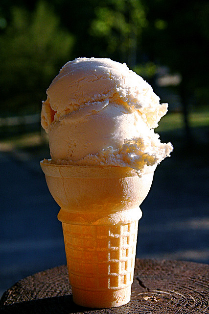

Ice Cream

Description
This creamy homemade vanilla ice cream is made with just a few ingredients — no ice cream maker needed!
Ingredients
- 2 cups heavy cream
- 1 cup whole milk
- 3/4 cup sugar
- 1 tbsp vanilla extract
- Pinch of salt
Steps
- In a large bowl, whisk together milk and sugar until the sugar is dissolved.
- Stir in the heavy cream, vanilla extract, and salt.
- If using an ice cream maker, pour mixture in and churn as directed.
- If not using an ice cream maker, pour mixture into a freezer-safe container.
- Freeze for about 1 hour, then stir vigorously to break up ice crystals.
- Repeat stirring every 30–45 minutes for 3–4 hours until creamy.
- Scoop and serve once fully frozen. Enjoy!
Back to Home